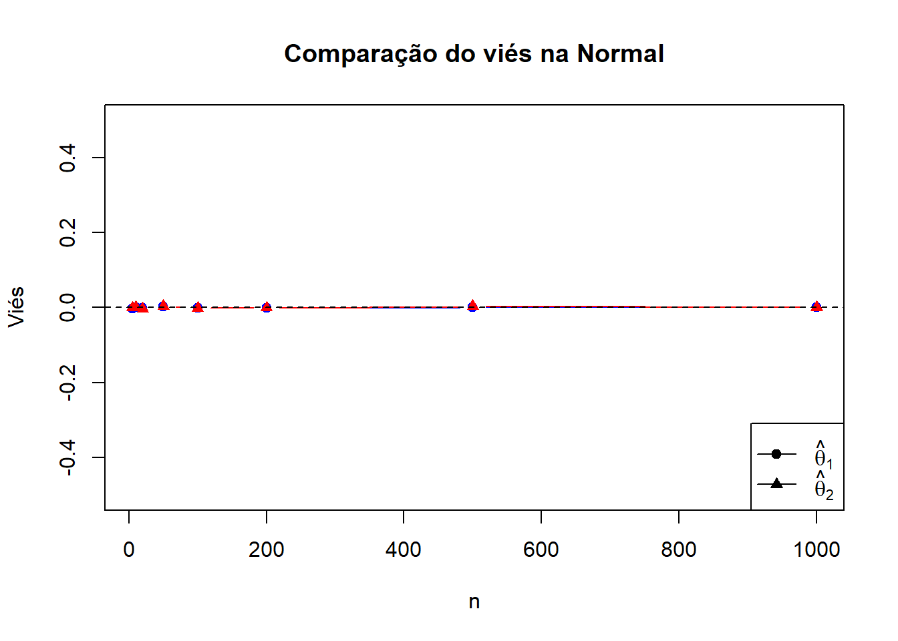
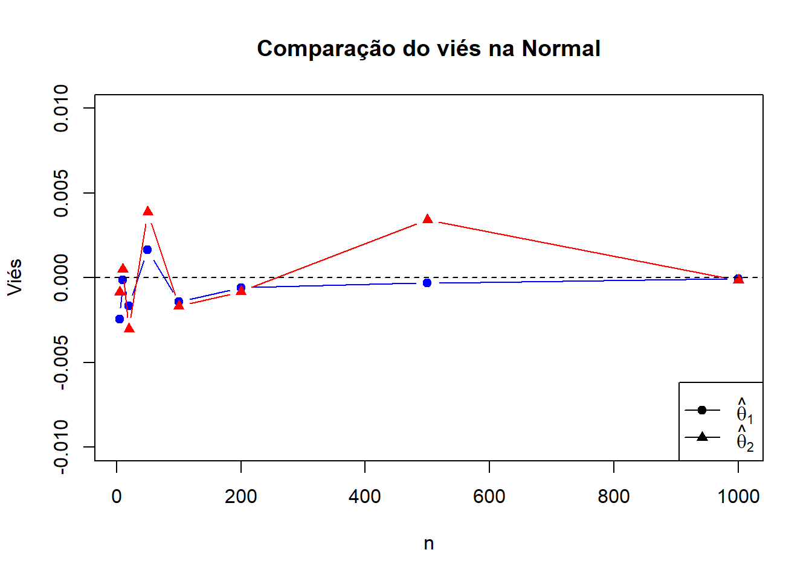
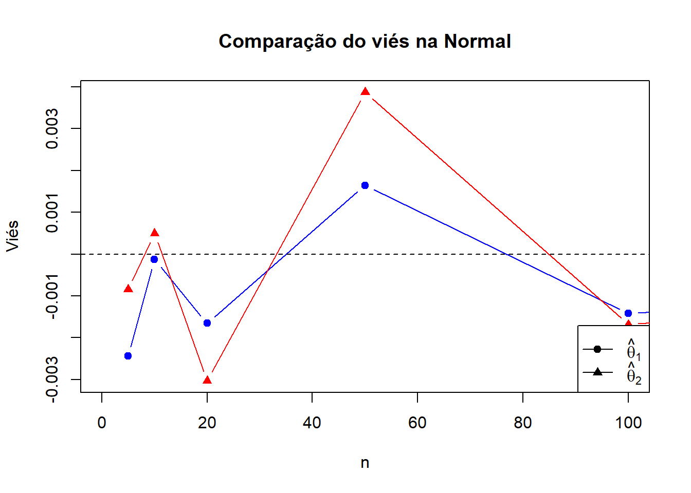
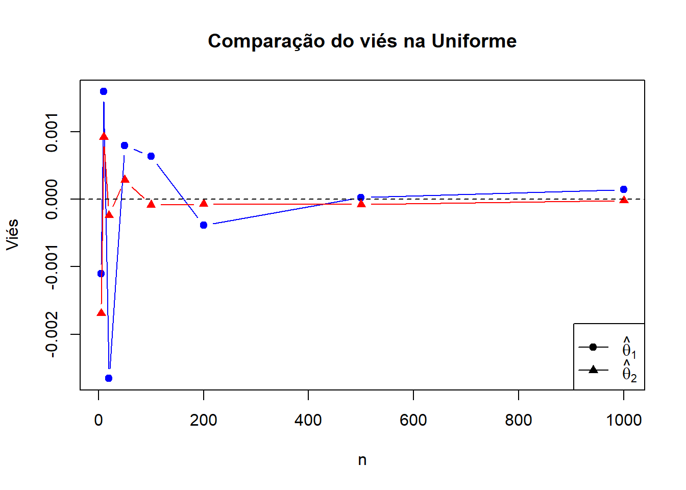
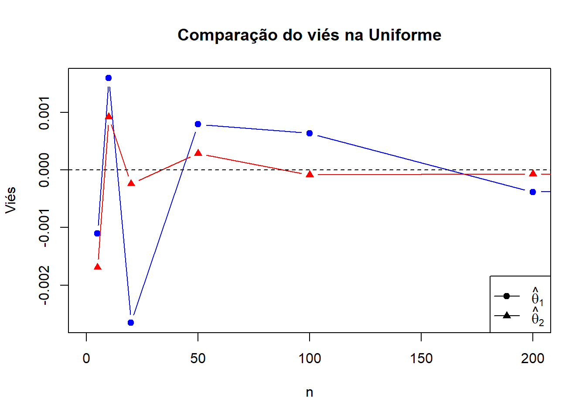
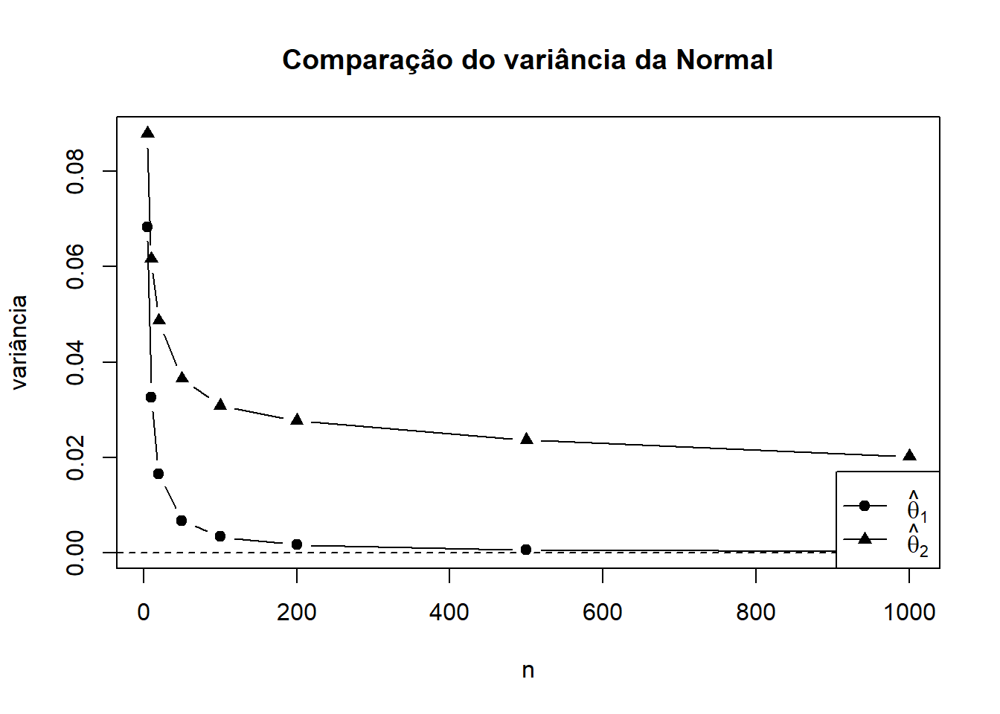
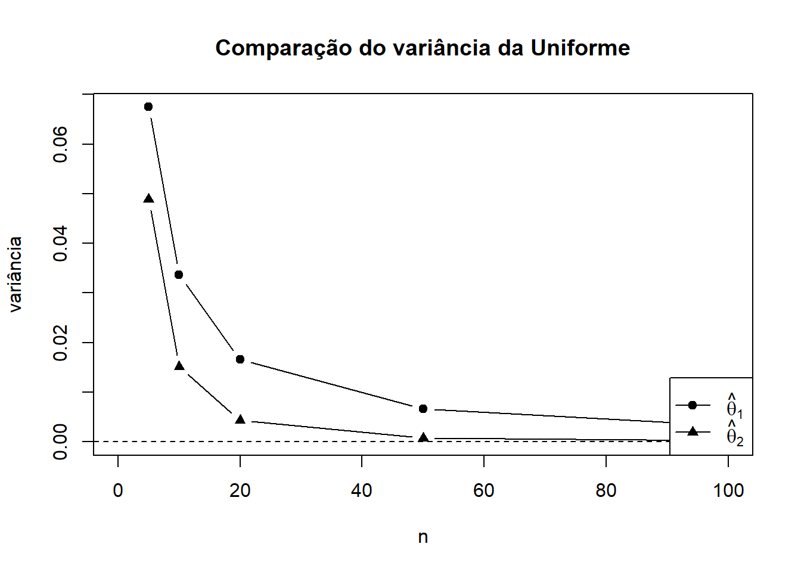
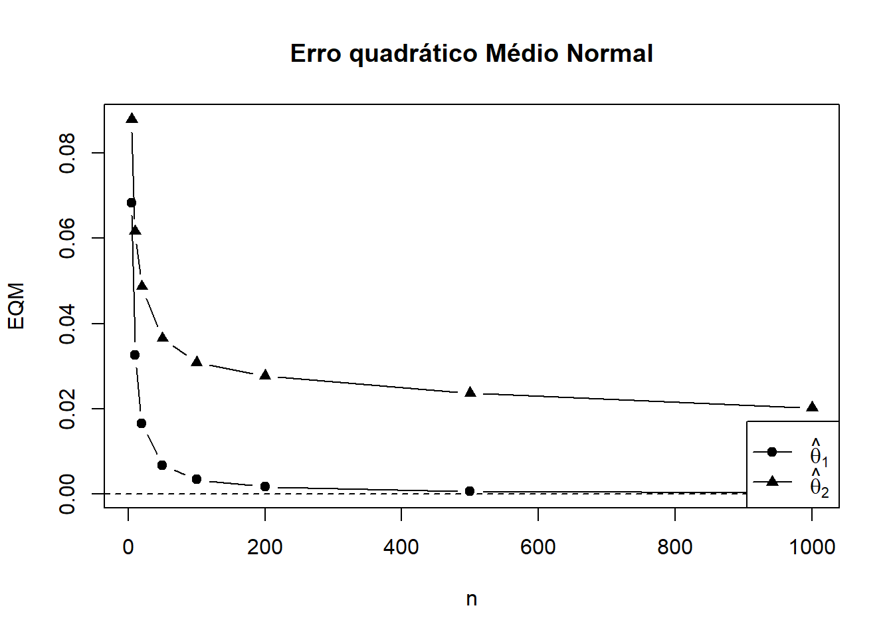
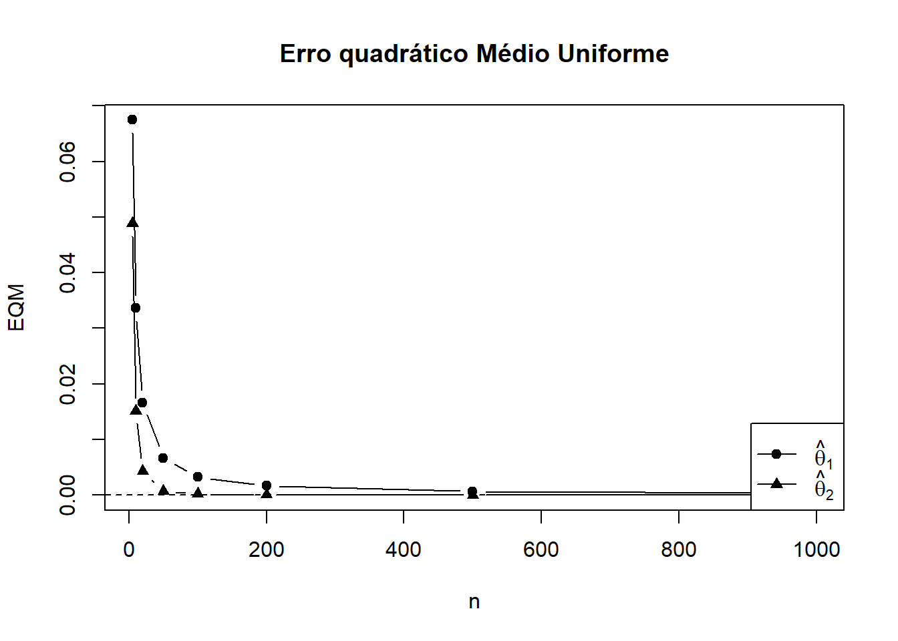

n_vals <- c(5, 10, 20, 50, 100, 200, 500, 1000)
B <- 10000
#Parâmetros
mu <- 0
sigma2 <- 1/3
sigma <- sqrt(sigma2)Comparação de Estimadores para E(X)
Objetivo
Nesta atividade, vamos comparar dois estimadores do valor esperado
\[\theta=\mathbb{E}[X]\]
dados por
\[\hat{\theta_{1}}=\bar{X}\]
e \[\hat{\theta_{2}}=\frac{X_{(1)}+X_{(n)}}{2}\]
O objetivo é estudar, por simulação, o comportamento desses estimadores em termos de:
• viés;
• variância;
• erro quadrático médio (EQM);
• consistência.
Configuração da Simulação
Usando as mesmas funções de sala de aula obtivemos os resultados e plotamos os gráficos :
resultados <- data.frame(
n = integer(),
vies_t1 = numeric(),
var_t1 = numeric(),
eqm_t1 = numeric(),
vies_t2 = numeric(),
var_t2 = numeric(),
eqm_t2 = numeric()
)
for (n in n_vals) {
est_t1 <- numeric(B)
est_t2 <- numeric(B)
for (b in 1:B) {
x <- rnorm(n, mean = mu, sd = sigma)
# X_barra
est_t1[b] <- mean(x)
# theta 2(ponto médio)
est_t2[b] <- (max(x)+min(x))/2
}
# medidas empíricas
vies_t1 <- mean(est_t1) - mu
var_t1 <- var(est_t1)
eqm_t1 <- mean((est_t1 - mu)^2) # ou mean(est_t1^2)
vies_t2 <- mean(est_t2) - mu
var_t2 <- var(est_t2)
eqm_t2 <- mean((est_t2 - mu)^2)
resultados <- rbind(resultados,
data.frame(
n = n,
vies_t1 = vies_t1,
var_t1 = var_t1,
eqm_t1= eqm_t1,
vies_t2 = vies_t2,
var_t2 = var_t2,
eqm_t2 = eqm_t2
))
}
cat("Resultados para Normal\n")Resultados para Normalprint(resultados) n vies_t1 var_t1 eqm_t1 vies_t2 var_t2
1 5 -2.437213e-03 0.0683187733 0.0683178815 -0.0008457943 0.08790740
2 10 -1.278254e-04 0.0326848697 0.0326816176 0.0004939759 0.06166668
3 20 -1.654350e-03 0.0165574189 0.0165585000 -0.0030282924 0.04870803
4 50 1.646220e-03 0.0067505807 0.0067526157 0.0038713513 0.03655347
5 100 -1.421538e-03 0.0033971090 0.0033987901 -0.0016837740 0.03082784
6 200 -5.815868e-04 0.0016808424 0.0016810126 -0.0008198860 0.02773425
7 500 -3.032624e-04 0.0006524645 0.0006524912 0.0034190373 0.02363632
8 1000 -5.028123e-05 0.0003243214 0.0003242915 -0.0001556581 0.02024493
eqm_t2
1 0.08789933
2 0.06166076
3 0.04871233
4 0.03656480
5 0.03082759
6 0.02773215
7 0.02364565
8 0.02024293Configuração para Uniforme
a1 <--1
a2 <- 1resultados2 <- data.frame(
n = integer(),
vies_t1 = numeric(),
var_t1 = numeric(),
eqm_t1 = numeric(),
vies_t2 = numeric(),
var_t2 = numeric(),
eqm_t2 = numeric()
)
for (n in n_vals) {
est_t1 <- numeric(B)
est_t2 <- numeric(B)
for (b in 1:B) {
x <- runif(n, min = a1, max = a2)
est_t1[b] <- mean(x)
est_t2[b] <- (max(x)+min(x))/2
}
vies_t1 <- mean(est_t1) - 0
var_t1 <- var(est_t1)
eqm_t1 <- mean((est_t1 - 0)^2)
vies_t2 <- mean(est_t2) - 0
var_t2 <- var(est_t2)
eqm_t2 <- mean((est_t2 - 0)^2)
resultados2 <- rbind(resultados2,
data.frame(
n = n,
vies_t1 = vies_t1,
var_t1 = var_t1,
eqm_t1= eqm_t1,
vies_t2 = vies_t2,
var_t2 = var_t2,
eqm_t2 = eqm_t2
))
}
cat("Resultados para Uniforme\n")Resultados para Uniformeprint(resultados2) n vies_t1 var_t1 eqm_t1 vies_t2 var_t2
1 5 -1.103925e-03 0.0674806778 0.0674751484 -1.691136e-03 4.886764e-02
2 10 1.596189e-03 0.0336105518 0.0336097385 9.246770e-04 1.516313e-02
3 20 -2.655868e-03 0.0165815170 0.0165869125 -2.389285e-04 4.292898e-03
4 50 7.956339e-04 0.0066421748 0.0066421436 2.870605e-04 7.343691e-04
5 100 6.400698e-04 0.0032501583 0.0032502429 -8.399323e-05 1.911418e-04
6 200 -3.832393e-04 0.0016801645 0.0016801433 -6.642730e-05 4.913159e-05
7 500 2.462747e-05 0.0006733256 0.0006732589 -7.315441e-05 7.734915e-06
8 1000 1.435140e-04 0.0003294896 0.0003294773 -1.836465e-05 1.898812e-06
eqm_t2
1 4.886562e-02
2 1.516247e-02
3 4.292526e-03
4 7.343781e-04
5 1.911298e-04
6 4.913109e-05
7 7.739493e-06
8 1.898959e-06Gráficos
plot(resultados$n, resultados$vies_t1, type = "b", pch = 19,col="blue",
ylim = c(-0.5,0.5),
xlab = "n", ylab = "Viés",
main = "Comparação do viés na Normal")
lines(resultados$n, resultados$vies_t2, type = "b", pch = 17, col="red")
abline(h = 0, lty = 2)
legend("bottomright",
legend = c(expression(hat(theta)[1]), expression(hat(theta)[2])),
pch = c(19,17), lty = 1)
No intervalo escolhido nós não podemos distinguir quem é o melhor mas podemos notar que ambos são não viezados , mas se diminuirmos os nosso intervalo para valores próximos de 0 temos :
plot(resultados$n, resultados$vies_t1, type = "b", pch = 19,col="blue",
ylim = c(-0.01,0.01),
xlab = "n", ylab = "Viés",
main = "Comparação do viés na Normal")
lines(resultados$n, resultados$vies_t2, type = "b", pch = 17, col="red")
abline(h = 0, lty = 2)
legend("bottomright",
legend = c(expression(hat(theta)[1]), expression(hat(theta)[2])),
pch = c(19,17), lty = 1)
Apesar de não conseguirmos podermos afirmar com toda a certeza qual é o melhor estimador , note que quanto maior o n mais os estimadores se comportam de maneiras parecidas . Vamos repetir o processo para os menores valores de N ;
plot(resultados$n, resultados$vies_t1, type = "b", pch = 19,col="blue",
xlim = c(0,100),
ylim = range(c(resultados$vies_t1,resultados$vies_t2)),
xlab = "n", ylab = "Viés",
main = "Comparação do viés na Normal")
lines(resultados$n, resultados$vies_t2, type = "b", pch = 17, col="red")
abline(h = 0, lty = 2)
legend("bottomright",
legend = c(expression(hat(theta)[1]), expression(hat(theta)[2])),
pch = c(19,17), lty = 1)
Diminuindo intervalo conseguimos ver que \(\hat{\theta_{1}}\) está em geral se aproximando mais rapidamente de ser um viés negativo do que \(\hat{\theta_{2}}\) . Já no contexto da Uniforme temos
plot(resultados2$n, resultados2$vies_t1, type = "b", pch = 19,col="blue",
ylim = range(c(resultados2$vies_t1, resultados2$vies_t2)),
xlab = "n", ylab = "Viés",
main = "Comparação do viés na Uniforme")
lines(resultados2$n, resultados2$vies_t2, type = "b", pch = 17,col="red")
abline(h = 0, lty = 2)
legend("bottomright",
legend = c(expression(hat(theta)[1]), expression(hat(theta)[2])),
pch = c(19,17), lty = 1)
Já para a Uniforme \(\hat{\theta_{2}}\) é melhor em comparação com \(\hat{\theta_{1}}\) . Mesmo quando olhamos para valores menores de N
plot(resultados2$n, resultados2$vies_t1, type = "b", pch = 19,col="blue",
xlim = c(0,200),
ylim = range(c(resultados2$vies_t1, resultados2$vies_t2)),
xlab = "n", ylab = "Viés",
main = "Comparação do viés na Uniforme")
lines(resultados2$n, resultados2$vies_t2, type = "b", pch = 17,col="red")
abline(h = 0, lty = 2)
legend("bottomright",
legend = c(expression(hat(theta)[1]), expression(hat(theta)[2])),
pch = c(19,17), lty = 1)
1) Qual dos dois estimadores apresenta menor viés ?
No contexto da Normal, ambos os estimadores \(\hat{\theta}_{1}\) e \(\hat{\theta}_{2}\) são não viesados, ou seja, o viés é praticamente zero em todos os casos. Para a distribuição Uniforme, acontece a mesma coisa: ambos são não viesados e as pequenas variações que vemos nos gráficos são apenas oscilações normais da simulação
plot(resultados$n, resultados$var_t1, type = "b", pch = 19,
ylim = range(c(resultados$var_t1, resultados$var_t2)),
xlab = "n", ylab = "variância",
main = "Comparação do variância da Normal")
lines(resultados$n, resultados$var_t2, type = "b", pch = 17)
abline(h = 0, lty = 2)
legend("bottomright",
legend = c(expression(hat(theta)[1]), expression(hat(theta)[2])),
pch = c(19,17), lty = 1)
Para Uniforme ,
plot(resultados2$n, resultados2$var_t1, type = "b", pch = 19,
xlim = c(0,100),
ylim = range(c(resultados2$var_t1, resultados2$var_t2)),
xlab = "n", ylab = "variância",
main = "Comparação do variância da Uniforme")
lines(resultados2$n, resultados2$var_t2, type = "b", pch = 17)
abline(h = 0, lty = 2)
legend("bottomright",
legend = c(expression(hat(theta)[1]), expression(hat(theta)[2])),
pch = c(19,17), lty = 1)
2) Qual deles apresenta menor variância?
Na distribuição Normal, o \(\hat{\theta}_{1}\) (média) costuma ter a menor variância. Já no cenário da Uniforme, o comportamento muda: o \(\hat{\theta}_{2}\) (ponto médio) é muito mais eficiente e apresenta uma variância bem menor que a da média, especialmente quando o \(n\) começa a crescer.
plot(resultados$n, resultados$eqm_t1, type = "b", pch = 19,
ylim = range(c(resultados$eqm_t1, resultados$eqm_t2)),
xlab = "n", ylab = "EQM",
main = "Erro quadrático Médio Normal")
lines(resultados$n, resultados$eqm_t2, type = "b", pch = 17)
abline(h = 0, lty = 2)
legend("bottomright",
legend = c(expression(hat(theta)[1]), expression(hat(theta)[2])),
pch = c(19,17), lty = 1)
Na uniforme
plot(resultados2$n, resultados2$eqm_t1, type = "b", pch = 19,
ylim = range(c(resultados2$eqm_t1, resultados2$eqm_t2)),
xlab = "n", ylab = "EQM",
main = "Erro quadrático Médio Uniforme")
lines(resultados2$n, resultados2$eqm_t2, type = "b", pch = 17)
abline(h = 0, lty = 2)
legend("bottomright",
legend = c(expression(hat(theta)[1]), expression(hat(theta)[2])),
pch = c(19,17), lty = 1)
3)Qual deles apresenta menor EQM?
O EQM segue o que vimos na variância, já que o viés é quase nulo. Para a Normal, o melhor estimador pelo EQM é o \(\hat{\theta}_{1}\). Para a Uniforme, o melhor estimador é o \(\hat{\theta}_{2}\), pois ele consegue ser muito mais preciso e errar menos conforme aumentamos o tamanho da amostra.
4) O comportamento muda conforme a distribuição dos dados?
Sim, o comportamento muda bastante. Na Normal, a média (\(\hat{\theta}_{1}\)) é a escolha mais segura, mas na Uniforme, usar o ponto médio das extremidades (\(\hat{\theta}_{2}\)) traz resultados muito melhores em termos de precisão.
5) À medida que n cresce, os estimadores se aproximam de θ = 0?
Sim, ambos os estimadores se aproximam de zero à medida que o \(n\) aumenta. Podemos observar isso nos gráficos de EQM, onde os valores de ambos vão caindo e chegando cada vez mais perto de zero conforme a amostra fica maior.
6)Com base nos resultados, qual estimador parece ser consistente em cada caso?
Nesse caso, ambos os estimadores parecem ser consistentes tanto na Normal quanto na Uniforme. Isso acontece porque, para os dois, o Erro Quadrático Médio (EQM) tende a zero quando o \(n\) cresce, o que mostra que eles convergem para o valor real de \(\theta\).